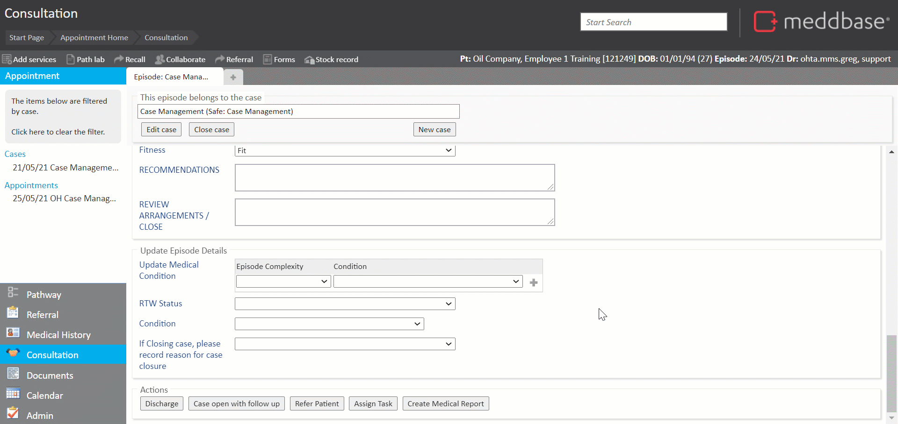
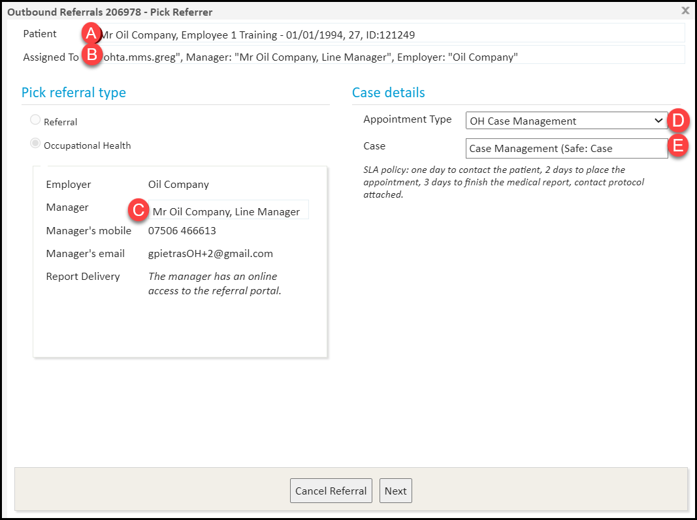
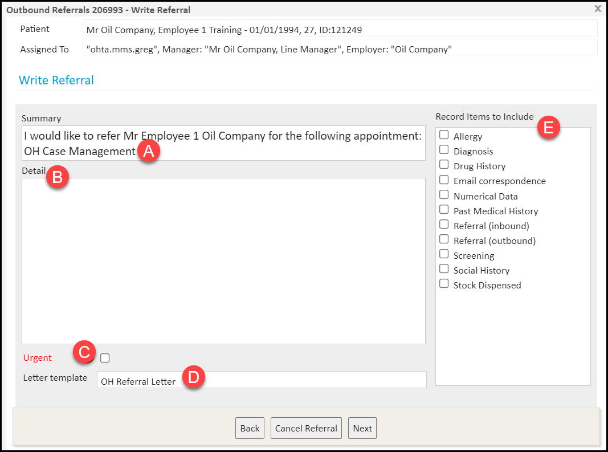
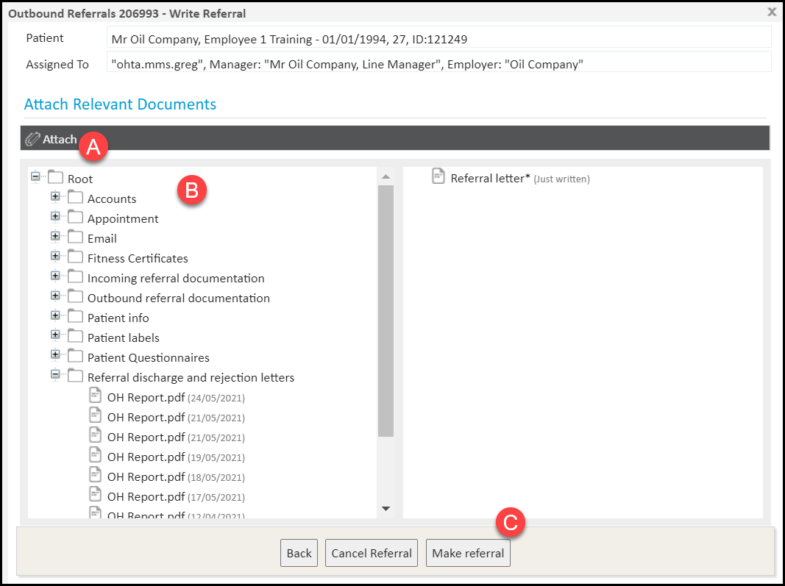
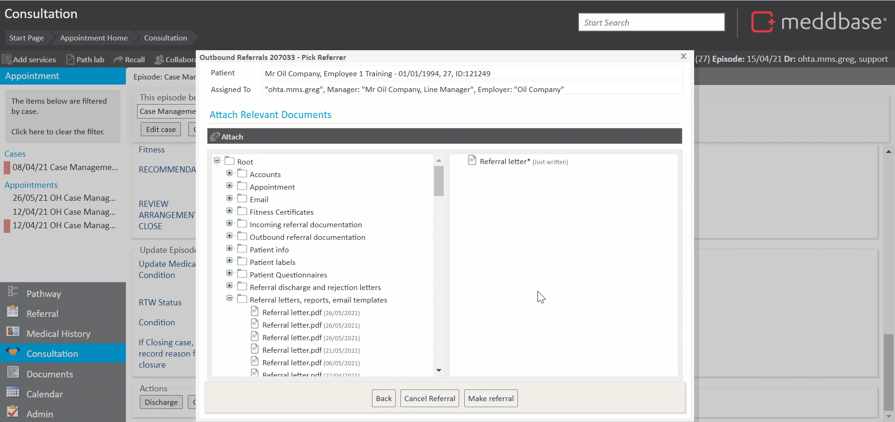

The Case Management workflow can end after one appointment with the patient or extend into a series of follow-ups. When an appointment booked from an OH referral is not the last encounter with the patient centred around the same Case, the appointment can be 'Discharged with Follow Up' which will mark the current appointment is complete, but keep the Case open, and prompt the user to create a New Follow Up Referral.
Having completed the follow-up referral process, the medical user is prompted to write the OH report. Please refer to the Case Management: Report writing - Occupational Health article for details on writing the OH report.
This article will walk you through the stages of generating a follow-up referral in the Case Management workflow, following an OH appointment.
If the OH appointment requires a follow-up, the Case it belongs to remains open and the follow-up referral is triggered.
To do this you can follow a series of steps as outlined below:

The next window displayed is the Pick Referrer dialogue.

This allows you to take actions as set out below.
A | Click in the Patient field to open the patient's record. |
B | Click in the Assigned To field to:-
|
C | Click in the Manager field to assigning the referral to a different manager (option 2 of 2). |
D | Select the Appointment Type for this referral from the dropdown menu. |
E | Click in the Case field to assign this referral to another case or create a new case. |
At this step:-
The next window displayed is the Write Referral dialogue.

This allows you to take actions as set out below.
A | Write the Summary line for the referral or leave the default message. |
B | Write the Detail for the referral. |
C | Mark the referral as Urgent. |
D | Choose the template to generate the Referral Letter or reset the template to default. |
E | Select Medical Record Items to include in the Referral Letter. |
At this step:-
The next window displayed is the Attach dialogue.

This allows you to take actions as set out below:-
A | Attach subsequent documents to the Referral Letter from the local machine. |
B | Attach subsequent documents to the Referral Letter from the patient's record. |
C | Make referral*. |
At this step:-
The process of making a follow-up referral in the Case Management workflow ends here. The work item goes through the Sending referral and Referral sent to Occupational Health Triage dialog windows automatically.

Once the follow-up referral is made, the system automatically prompts the medical uses to write the OH Referral.